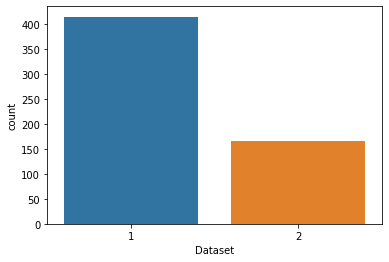
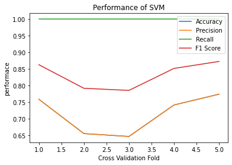
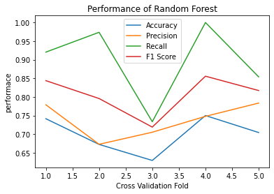

Contents
import pickle
import numpy as np # linear algebra
import pandas as pd # data processing, CSV file I/O (e.g. pd.read_csv)
import matplotlib.pyplot as plt# for Plotting graphs
import seaborn as sns# same as matplotlib but to make life easier
# Input data files are available in the read-only "../input/" directory
# For example, running this (by clicking run or pressing Shift+Enter) will list all files under the input directory
import os
for dirname, _, filenames in os.walk('https://raw.githubusercontent.com/DiahDSyntia/datamining-tugasakhir/main/indian_liver_patient.csv'):
for filename in filenames:
print(os.path.join(dirname, filename))
#loading the dataset
df=pd.read_csv("https://raw.githubusercontent.com/DiahDSyntia/datamining-tugasakhir/main/indian_liver_patient.csv")
df.head()
| Age | Gender | Total_Bilirubin | Direct_Bilirubin | Alkaline_Phosphotase | Alamine_Aminotransferase | Aspartate_Aminotransferase | Total_Protiens | Albumin | Albumin_and_Globulin_Ratio | Dataset | |
|---|---|---|---|---|---|---|---|---|---|---|---|
| 0 | 65 | 0 | 0.7 | 0.1 | 187 | 16 | 18 | 6.8 | 3.3 | 0.90 | 1 |
| 1 | 62 | 1 | 10.9 | 5.5 | 699 | 64 | 100 | 7.5 | 3.2 | 0.74 | 1 |
| 2 | 62 | 1 | 7.3 | 4.1 | 490 | 60 | 68 | 7.0 | 3.3 | 0.89 | 1 |
| 3 | 58 | 1 | 1.0 | 0.4 | 182 | 14 | 20 | 6.8 | 3.4 | 1.00 | 1 |
| 4 | 72 | 1 | 3.9 | 2.0 | 195 | 27 | 59 | 7.3 | 2.4 | 0.40 | 1 |
#describing the data
df.describe()
| Age | Gender | Total_Bilirubin | Direct_Bilirubin | Alkaline_Phosphotase | Alamine_Aminotransferase | Aspartate_Aminotransferase | Total_Protiens | Albumin | Albumin_and_Globulin_Ratio | Dataset | |
|---|---|---|---|---|---|---|---|---|---|---|---|
| count | 579.000000 | 579.000000 | 579.000000 | 579.000000 | 579.000000 | 579.000000 | 579.000000 | 579.000000 | 579.000000 | 579.000000 | 579.000000 |
| mean | 44.782383 | 0.758204 | 3.315371 | 1.494128 | 291.366149 | 81.126079 | 110.414508 | 6.481693 | 3.138515 | 0.947064 | 1.284974 |
| std | 16.221786 | 0.428542 | 6.227716 | 2.816499 | 243.561863 | 183.182845 | 289.850034 | 1.084641 | 0.794435 | 0.319592 | 0.451792 |
| min | 4.000000 | 0.000000 | 0.400000 | 0.100000 | 63.000000 | 10.000000 | 10.000000 | 2.700000 | 0.900000 | 0.300000 | 1.000000 |
| 25% | 33.000000 | 1.000000 | 0.800000 | 0.200000 | 175.500000 | 23.000000 | 25.000000 | 5.800000 | 2.600000 | 0.700000 | 1.000000 |
| 50% | 45.000000 | 1.000000 | 1.000000 | 0.300000 | 208.000000 | 35.000000 | 42.000000 | 6.600000 | 3.100000 | 0.930000 | 1.000000 |
| 75% | 58.000000 | 1.000000 | 2.600000 | 1.300000 | 298.000000 | 61.000000 | 87.000000 | 7.200000 | 3.800000 | 1.100000 | 2.000000 |
| max | 90.000000 | 1.000000 | 75.000000 | 19.700000 | 2110.000000 | 2000.000000 | 4929.000000 | 9.600000 | 5.500000 | 2.800000 | 2.000000 |
#printing the shape of data
print(df.shape)
df.info()
(579, 11)
<class 'pandas.core.frame.DataFrame'>
RangeIndex: 579 entries, 0 to 578
Data columns (total 11 columns):
# Column Non-Null Count Dtype
--- ------ -------------- -----
0 Age 579 non-null int64
1 Gender 579 non-null int64
2 Total_Bilirubin 579 non-null float64
3 Direct_Bilirubin 579 non-null float64
4 Alkaline_Phosphotase 579 non-null int64
5 Alamine_Aminotransferase 579 non-null int64
6 Aspartate_Aminotransferase 579 non-null int64
7 Total_Protiens 579 non-null float64
8 Albumin 579 non-null float64
9 Albumin_and_Globulin_Ratio 579 non-null float64
10 Dataset 579 non-null int64
dtypes: float64(5), int64(6)
memory usage: 49.9 KB
#encoding the Gender attribute
df['Gender'].replace({'Male':1,'Female':0},inplace=True)
#plotting Correlation
plt.figure(figsize=(10,10))
sns.heatmap(df.corr(),cmap='Greens',annot=True)
<matplotlib.axes._subplots.AxesSubplot at 0x7f5f123df850>
sns.pairplot(df, hue='Dataset')
KeyboardInterruptTraceback (most recent call last)
<ipython-input-7-afe7e18bb887> in <module>
----> 1 sns.pairplot(df, hue='Dataset')
/usr/local/lib/python3.7/dist-packages/seaborn/_decorators.py in inner_f(*args, **kwargs)
44 )
45 kwargs.update({k: arg for k, arg in zip(sig.parameters, args)})
---> 46 return f(**kwargs)
47 return inner_f
48
/usr/local/lib/python3.7/dist-packages/seaborn/axisgrid.py in pairplot(data, hue, hue_order, palette, vars, x_vars, y_vars, kind, diag_kind, markers, height, aspect, corner, dropna, plot_kws, diag_kws, grid_kws, size)
2154 grid.add_legend()
2155
-> 2156 grid.tight_layout()
2157
2158 return grid
/usr/local/lib/python3.7/dist-packages/seaborn/axisgrid.py in tight_layout(self, *args, **kwargs)
86 if self._tight_layout_pad is not None:
87 kwargs.setdefault("pad", self._tight_layout_pad)
---> 88 self._figure.tight_layout(*args, **kwargs)
89
90 def add_legend(self, legend_data=None, title=None, label_order=None,
/usr/local/lib/python3.7/dist-packages/matplotlib/cbook/deprecation.py in wrapper(*args, **kwargs)
356 f"%(removal)s. If any parameter follows {name!r}, they "
357 f"should be pass as keyword, not positionally.")
--> 358 return func(*args, **kwargs)
359
360 return wrapper
/usr/local/lib/python3.7/dist-packages/matplotlib/figure.py in tight_layout(self, renderer, pad, h_pad, w_pad, rect)
2494 kwargs = get_tight_layout_figure(
2495 self, self.axes, subplotspec_list, renderer,
-> 2496 pad=pad, h_pad=h_pad, w_pad=w_pad, rect=rect)
2497 if kwargs:
2498 self.subplots_adjust(**kwargs)
/usr/local/lib/python3.7/dist-packages/matplotlib/tight_layout.py in get_tight_layout_figure(fig, axes_list, subplotspec_list, renderer, pad, h_pad, w_pad, rect)
386 ax_bbox_list=ax_bbox_list,
387 pad=pad, h_pad=h_pad, w_pad=w_pad,
--> 388 rect=(left, bottom, right, top))
389
390 return kwargs
/usr/local/lib/python3.7/dist-packages/matplotlib/tight_layout.py in auto_adjust_subplotpars(fig, renderer, nrows_ncols, num1num2_list, subplot_list, ax_bbox_list, pad, h_pad, w_pad, rect)
107 continue
108
--> 109 tight_bbox_raw = union([ax.get_tightbbox(renderer) for ax in subplots
110 if ax.get_visible()])
111 tight_bbox = TransformedBbox(tight_bbox_raw,
/usr/local/lib/python3.7/dist-packages/matplotlib/tight_layout.py in <listcomp>(.0)
108
109 tight_bbox_raw = union([ax.get_tightbbox(renderer) for ax in subplots
--> 110 if ax.get_visible()])
111 tight_bbox = TransformedBbox(tight_bbox_raw,
112 fig.transFigure.inverted())
/usr/local/lib/python3.7/dist-packages/matplotlib/axes/_base.py in get_tightbbox(self, renderer, call_axes_locator, bbox_extra_artists)
4321
4322 if self.axison:
-> 4323 bb_xaxis = self.xaxis.get_tightbbox(renderer)
4324 if bb_xaxis:
4325 bb.append(bb_xaxis)
/usr/local/lib/python3.7/dist-packages/matplotlib/axis.py in get_tightbbox(self, renderer)
1184 return
1185
-> 1186 ticks_to_draw = self._update_ticks()
1187
1188 self._update_label_position(renderer)
/usr/local/lib/python3.7/dist-packages/matplotlib/axis.py in _update_ticks(self)
1102 """
1103 major_locs = self.get_majorticklocs()
-> 1104 major_labels = self.major.formatter.format_ticks(major_locs)
1105 major_ticks = self.get_major_ticks(len(major_locs))
1106 self.major.formatter.set_locs(major_locs)
/usr/local/lib/python3.7/dist-packages/matplotlib/ticker.py in format_ticks(self, values)
253 def format_ticks(self, values):
254 """Return the tick labels for all the ticks at once."""
--> 255 self.set_locs(values)
256 return [self(value, i) for i, value in enumerate(values)]
257
/usr/local/lib/python3.7/dist-packages/matplotlib/ticker.py in set_locs(self, locs)
677 if len(self.locs) > 0:
678 if self._useOffset:
--> 679 self._compute_offset()
680 self._set_order_of_magnitude()
681 self._set_format()
/usr/local/lib/python3.7/dist-packages/matplotlib/ticker.py in _compute_offset(self)
684 locs = self.locs
685 # Restrict to visible ticks.
--> 686 vmin, vmax = sorted(self.axis.get_view_interval())
687 locs = np.asarray(locs)
688 locs = locs[(vmin <= locs) & (locs <= vmax)]
/usr/local/lib/python3.7/dist-packages/matplotlib/axis.py in getter(self)
1891 def getter(self):
1892 # docstring inherited.
-> 1893 return getattr(getattr(self.axes, lim_name), attr_name)
1894
1895 def setter(self, vmin, vmax, ignore=False):
/usr/local/lib/python3.7/dist-packages/matplotlib/axes/_base.py in viewLim(self)
597 @property
598 def viewLim(self):
--> 599 self._unstale_viewLim()
600 return self._viewLim
601
/usr/local/lib/python3.7/dist-packages/matplotlib/axes/_base.py in _unstale_viewLim(self)
587 for ax in self._shared_x_axes.get_siblings(self))
588 scaley = any(ax._stale_viewlim_y
--> 589 for ax in self._shared_y_axes.get_siblings(self))
590 if scalex or scaley:
591 for ax in self._shared_x_axes.get_siblings(self):
/usr/local/lib/python3.7/dist-packages/matplotlib/cbook/__init__.py in get_siblings(self, a)
882 def get_siblings(self, a):
883 """Return all of the items joined with *a*, including itself."""
--> 884 self.clean()
885 siblings = self._mapping.get(weakref.ref(a), [weakref.ref(a)])
886 return [x() for x in siblings]
/usr/local/lib/python3.7/dist-packages/matplotlib/cbook/__init__.py in clean(self)
834 """Clean dead weak references from the dictionary."""
835 mapping = self._mapping
--> 836 to_drop = [key for key in mapping if key() is None]
837 for key in to_drop:
838 val = mapping.pop(key)
/usr/local/lib/python3.7/dist-packages/matplotlib/cbook/__init__.py in <listcomp>(.0)
834 """Clean dead weak references from the dictionary."""
835 mapping = self._mapping
--> 836 to_drop = [key for key in mapping if key() is None]
837 for key in to_drop:
838 val = mapping.pop(key)
KeyboardInterrupt:
# visualize number of patients diagonised with liver diesease
sns.countplot(data = df, x = 'Dataset');

#Visualizing data with liver disease along with Gender
plt.figure(figsize=(6,6))
ax = sns.countplot(x = df['Dataset'].apply(lambda x:'Normal' if x == 1 else 'Liver Disease'), hue=df['Gender'])
ax.set_xlabel('Patient Condition')
Text(0.5, 0, 'Patient Condition')
#checking for missing values as per column
df.isna().sum()
Age 0
Gender 0
Total_Bilirubin 0
Direct_Bilirubin 0
Alkaline_Phosphotase 0
Alamine_Aminotransferase 0
Aspartate_Aminotransferase 0
Total_Protiens 0
Albumin 0
Albumin_and_Globulin_Ratio 0
Dataset 0
dtype: int64
#checking the rows with the missing values
df[df['Albumin_and_Globulin_Ratio'].isna()]
| Age | Gender | Total_Bilirubin | Direct_Bilirubin | Alkaline_Phosphotase | Alamine_Aminotransferase | Aspartate_Aminotransferase | Total_Protiens | Albumin | Albumin_and_Globulin_Ratio | Dataset |
|---|
#Lets have a look for correlation of Albumin_and_Globulin_Ratio with other columns
plt.figure(figsize=(15,10))
sns.heatmap(df.corr(),cmap='Greens',annot=True)
<matplotlib.axes._subplots.AxesSubplot at 0x7fd180105850>
#As seen above Albumin_and_Globulin_Ratio is highly correlated with Albumin
# we apply binning to Albumin and will fill the values in Albumin_and_Globulin_Ratio using median of the bin value
df["binned_Albumin"]=pd.cut(df['Albumin'],bins=10,labels=list(range(10)))
#checking the rows with the missing values
df[df['Albumin_and_Globulin_Ratio'].isna()]
| Age | Gender | Total_Bilirubin | Direct_Bilirubin | Alkaline_Phosphotase | Alamine_Aminotransferase | Aspartate_Aminotransferase | Total_Protiens | Albumin | Albumin_and_Globulin_Ratio | Dataset | binned_Albumin |
|---|
#seprating dataframe as per bins of missing data
df_bin6=df[df['binned_Albumin']==6]
df_bin4=df[df['binned_Albumin']==4]
df_bin3=df[df['binned_Albumin']==3]
df_bin8=df[df['binned_Albumin']==8]
#filling na values for bin 6
df_bin6['Albumin_and_Globulin_Ratio'].fillna(df_bin6['Albumin_and_Globulin_Ratio'].median(),inplace=True)
print("Median for Albumin Globumin Ratio for bin 6: ",df_bin6['Albumin_and_Globulin_Ratio'].median())
#adding the replaced values
df.drop(df[df['binned_Albumin']==6].index, inplace = True)
df=df.append(df_bin6,ignore_index=True)
#filling na values for bin 4
df_bin4['Albumin_and_Globulin_Ratio'].fillna(df_bin4['Albumin_and_Globulin_Ratio'].median(),inplace=True)
print("Median for Albumin Globumin Ratio for bin 4: ",df_bin4['Albumin_and_Globulin_Ratio'].median())
#adding the replaced values
df.drop(df[df['binned_Albumin']==4].index, inplace = True)
df=df.append(df_bin4,ignore_index=True)
#filling na values for bin 3
df_bin3['Albumin_and_Globulin_Ratio'].fillna(df_bin3['Albumin_and_Globulin_Ratio'].median(),inplace=True)
print("Median for Albumin Globumin Ratio for bin 3: ",df_bin3['Albumin_and_Globulin_Ratio'].median())
#adding the replaced values
df.drop(df[df['binned_Albumin']==3].index, inplace = True)
df=df.append(df_bin3,ignore_index=True)
#filling na values for bin 8
df_bin8['Albumin_and_Globulin_Ratio'].fillna(df_bin8['Albumin_and_Globulin_Ratio'].median(),inplace=True)
print("Median for Albumin Globumin Ratio for bin 8: ",df_bin8['Albumin_and_Globulin_Ratio'].median())
#adding the replaced values
df.drop(df[df['binned_Albumin']==8].index, inplace = True)
df= df.append(df_bin8,ignore_index=True)
#Printing Shape of Dataset
print(df.shape)
Median for Albumin Globumin Ratio for bin 6: 1.1
Median for Albumin Globumin Ratio for bin 4: 0.9
Median for Albumin Globumin Ratio for bin 3: 0.8
Median for Albumin Globumin Ratio for bin 8: 1.3
(579, 12)
/usr/local/lib/python3.7/dist-packages/pandas/core/generic.py:6392: SettingWithCopyWarning:
A value is trying to be set on a copy of a slice from a DataFrame
See the caveats in the documentation: https://pandas.pydata.org/pandas-docs/stable/user_guide/indexing.html#returning-a-view-versus-a-copy
return self._update_inplace(result)
/usr/local/lib/python3.7/dist-packages/pandas/core/generic.py:6392: SettingWithCopyWarning:
A value is trying to be set on a copy of a slice from a DataFrame
See the caveats in the documentation: https://pandas.pydata.org/pandas-docs/stable/user_guide/indexing.html#returning-a-view-versus-a-copy
return self._update_inplace(result)
/usr/local/lib/python3.7/dist-packages/pandas/core/generic.py:6392: SettingWithCopyWarning:
A value is trying to be set on a copy of a slice from a DataFrame
See the caveats in the documentation: https://pandas.pydata.org/pandas-docs/stable/user_guide/indexing.html#returning-a-view-versus-a-copy
return self._update_inplace(result)
/usr/local/lib/python3.7/dist-packages/pandas/core/generic.py:6392: SettingWithCopyWarning:
A value is trying to be set on a copy of a slice from a DataFrame
See the caveats in the documentation: https://pandas.pydata.org/pandas-docs/stable/user_guide/indexing.html#returning-a-view-versus-a-copy
return self._update_inplace(result)
#remove the binned albumin column
df.drop(columns=['binned_Albumin'], inplace=True)
#Scaling the dataset using Min Max scaler:
#Getting Numerical Columns
cols=df.columns.to_list()
cols.remove('Gender')
cols.remove('Dataset')
print("Columns with numerical data:")
cols
Columns with numerical data:
['Age',
'Total_Bilirubin',
'Direct_Bilirubin',
'Alkaline_Phosphotase',
'Alamine_Aminotransferase',
'Aspartate_Aminotransferase',
'Total_Protiens',
'Albumin',
'Albumin_and_Globulin_Ratio']
#getting Numerical columns:
df_numerical=df[cols]
#starting scaling process:
from sklearn.preprocessing import MinMaxScaler
scaler = MinMaxScaler()
scaler.fit(df_numerical)
scaled=scaler.transform(df_numerical) #the variable scaled will be in numpy array
x=pd.DataFrame(scaled, columns=cols) #converting the variable to dataframe.
x['Gender']=df['Gender']# adding Gender to X or attribute list
y=df['Dataset']# Getting the labels
x
| Age | Total_Bilirubin | Direct_Bilirubin | Alkaline_Phosphotase | Alamine_Aminotransferase | Aspartate_Aminotransferase | Total_Protiens | Albumin | Albumin_and_Globulin_Ratio | Gender | |
|---|---|---|---|---|---|---|---|---|---|---|
| 0 | 0.709302 | 0.004021 | 0.000000 | 0.060576 | 0.003015 | 0.001626 | 0.594203 | 0.521739 | 0.240 | 0 |
| 1 | 0.674419 | 0.140751 | 0.275510 | 0.310699 | 0.027136 | 0.018296 | 0.695652 | 0.500000 | 0.176 | 1 |
| 2 | 0.674419 | 0.092493 | 0.204082 | 0.208598 | 0.025126 | 0.011791 | 0.623188 | 0.521739 | 0.236 | 1 |
| 3 | 0.627907 | 0.008043 | 0.015306 | 0.058134 | 0.002010 | 0.002033 | 0.594203 | 0.543478 | 0.280 | 1 |
| 4 | 0.488372 | 0.018767 | 0.030612 | 0.070835 | 0.004523 | 0.000813 | 0.710145 | 0.760870 | 0.400 | 1 |
| ... | ... | ... | ... | ... | ... | ... | ... | ... | ... | ... |
| 574 | 0.755814 | 0.005362 | 0.005102 | 0.040547 | 0.016080 | 0.012198 | 0.826087 | 0.869565 | 0.440 | 0 |
| 575 | 0.290698 | 0.004021 | 0.005102 | 0.049829 | 0.022613 | 0.015654 | 0.695652 | 0.804348 | 0.512 | 1 |
| 576 | 0.232558 | 0.008043 | 0.005102 | 0.061553 | 0.021106 | 0.004269 | 0.768116 | 0.847826 | 0.480 | 1 |
| 577 | 0.383721 | 0.005362 | 0.005102 | 0.069370 | 0.010553 | 0.005286 | 0.942029 | 0.804348 | 0.280 | 0 |
| 578 | 0.418605 | 0.022788 | 0.045918 | 0.344406 | 0.032161 | 0.026631 | 0.739130 | 0.869565 | 0.520 | 0 |
579 rows × 10 columns
#moving for feature selection
from sklearn.ensemble import ExtraTreesClassifier
from sklearn.feature_selection import SelectFromModel
clf = ExtraTreesClassifier(n_estimators=50)
clf = clf.fit(x, y)
print("Showing feature importance values")
print(clf.feature_importances_)
Showing feature importance values
[0.12087358 0.10693257 0.10592919 0.12582741 0.1104484 0.11560071
0.09099923 0.10135261 0.09888644 0.02314985]
model=SelectFromModel(clf, prefit=True) #getting features from the above classifer as per the importances
cols=x.columns.to_list()#getting list of columns
tf=model.get_support()#getting which features are important
selectedcols=[]
for i in range(len(cols)):
if tf[i]:
selectedcols.append(cols[i])
print("showing selected columns")
print(selectedcols)
#converting the data
X_new = model.transform(x)
X_new.shape
showing selected columns
['Age', 'Total_Bilirubin', 'Direct_Bilirubin', 'Alkaline_Phosphotase', 'Alamine_Aminotransferase', 'Aspartate_Aminotransferase', 'Albumin']
/usr/local/lib/python3.7/dist-packages/sklearn/base.py:444: UserWarning: X has feature names, but SelectFromModel was fitted without feature names
f"X has feature names, but {self.__class__.__name__} was fitted without"
(579, 7)
#splitting the dataset for Training and testing and using 5-fold Cross validation.
from sklearn.model_selection import KFold
kf = KFold(n_splits=5)
kf.get_n_splits(X_new)
#making a comparative study of 3 different ML Algorithms namely SVM, Random Forest, KNN
#metrics for SVM
SVM_accuracy=[]
SVM_precision=[]
SVM_recall=[]
SVM_f1_score=[]
#metrics for Random Forest
RF_accuracy=[]
RF_precision=[]
RF_recall=[]
RF_f1_score=[]
#metrics for KNN
KNN_accuracy=[]
KNN_precision=[]
KNN_recall=[]
KNN_f1_score=[]
#initializing the models
#importing libraries of the selected algorithms
from sklearn.svm import SVC
from sklearn.ensemble import RandomForestClassifier
from sklearn.neighbors import KNeighborsClassifier
#importing libraries of performance Metrics
from sklearn.metrics import accuracy_score
from sklearn.metrics import precision_score
from sklearn.metrics import recall_score
from sklearn.metrics import f1_score
#Making the classifier Objects
clf_svm=SVC() #SVM object
clf_rf=RandomForestClassifier(max_depth=5, random_state=0)#Random Forest Object
clf_knn = KNeighborsClassifier(n_neighbors=3)#KNN object
i=1# count the number of folds
#starting the 5 fold cross valivation
for train_index, test_index in kf.split(X_new):
print("%d Number of fold"%i)
i+=1
#Splitting the data
X_train, X_test = X_new[train_index], X_new[test_index]
y_train, y_test = y[train_index], y[test_index]
#Training and Evaluating SVM
model=clf_svm.fit(X_train,y_train)
y_pred=model.predict(X_test)
SVM_accuracy.append(accuracy_score(y_test,y_pred))
SVM_precision.append(precision_score(y_test,y_pred))
SVM_recall.append(recall_score(y_test,y_pred))
SVM_f1_score.append(f1_score(y_test,y_pred))
#Training and Evaluating Random Forest
model=clf_rf.fit(X_train,y_train)
y_pred=model.predict(X_test)
RF_accuracy.append(accuracy_score(y_test,y_pred))
RF_precision.append(precision_score(y_test,y_pred))
RF_recall.append(recall_score(y_test,y_pred))
RF_f1_score.append(f1_score(y_test,y_pred))
#Training and Evaluating KNN
model=clf_knn.fit(X_train,y_train)
y_pred=model.predict(X_test)
KNN_accuracy.append(accuracy_score(y_test,y_pred))
KNN_precision.append(precision_score(y_test,y_pred))
KNN_recall.append(recall_score(y_test,y_pred))
KNN_f1_score.append(f1_score(y_test,y_pred))
1 Number of fold
2 Number of fold
3 Number of fold
4 Number of fold
5 Number of fold
#visualizing results of SVM per fold
x=list(range(1,6))
plt.plot(x,SVM_accuracy,label='Accuracy')
plt.plot(x,SVM_precision,label='Precision')
plt.plot(x,SVM_recall, label='Recall')
plt.plot(x,SVM_f1_score,label='F1 Score')
plt.title("Performance of SVM")
plt.legend()
plt.xlabel("Cross Validation Fold")
plt.ylabel("performace")
plt.show()

#visualizing results of Random Forest per fold
plt.plot(x,RF_accuracy,label='Accuracy')
plt.plot(x,RF_precision,label='Precision')
plt.plot(x,RF_recall, label='Recall')
plt.plot(x,RF_f1_score,label='F1 Score')
plt.title("Performance of Random Forest")
plt.xlabel("Cross Validation Fold")
plt.ylabel("performace")
plt.legend()
plt.show()

#visualizing results of KNN per epoch
x=list(range(1,6))
plt.plot(x,KNN_accuracy,label='Accuracy')
plt.plot(x,KNN_precision,label='Precision')
plt.plot(x,KNN_recall, label='Recall')
plt.plot(x,KNN_f1_score,label='F1 Score')
plt.title("Performance of KNN")
plt.xlabel("Cross Validation Fold")
plt.ylabel("performace")
plt.legend()
plt.show
<function matplotlib.pyplot.show(*args, **kw)>
#visualizing average results:
SVM=["SVM ", (sum(SVM_accuracy)/len(SVM_accuracy)), (sum(SVM_precision)/len(SVM_precision)),
(sum(SVM_recall)/len(SVM_recall)), (sum(SVM_f1_score)/len(SVM_f1_score))]
RF=["RF ", (sum(RF_accuracy)/len(RF_accuracy)), (sum(RF_precision)/len(RF_precision)),
(sum(RF_recall)/len(RF_recall)), (sum(RF_f1_score)/len(RF_f1_score))]
KNN=["KNN ", (sum(KNN_accuracy)/len(KNN_accuracy)), (sum(KNN_precision)/len(KNN_precision)),
(sum(KNN_recall)/len(KNN_recall)), (sum(KNN_f1_score)/len(KNN_f1_score))]
data=[]
data.append(SVM)
data.append(RF)
data.append(KNN)
#converting results to dataframe
results=pd.DataFrame(data,columns=["Algorithms","Accuracy", "Precision", "Recall", "F1 Score"])
results
| Algorithms | Accuracy | Precision | Recall | F1 Score | |
|---|---|---|---|---|---|
| 0 | SVM | 0.715127 | 0.715127 | 1.000000 | 0.832757 |
| 1 | RF | 0.699490 | 0.737607 | 0.896281 | 0.806266 |
| 2 | KNN | 0.621874 | 0.747097 | 0.712840 | 0.722630 |
pickle.dump(clf, open('pickleflask', 'wb'))